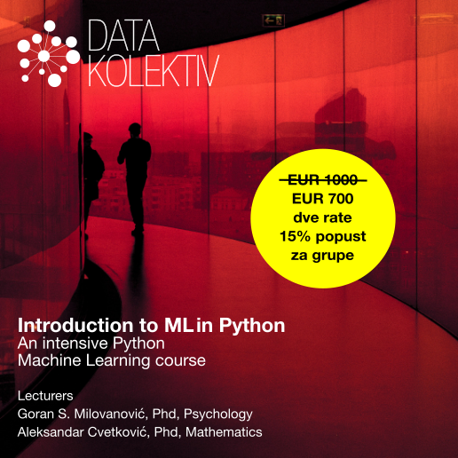

DATA SCIENCE INTENSIVE 2022
Uvod u mašinsko učenje (ML) u Python
Decembar 2022, Startit centar Beograd
Online Slack/GitHub
>> Prijavite se na: hello@datakolektiv.com <<

>> Prijavite se na: hello@datakolektiv.com <<
Cena 1000€ 700€
Plan rada
Izvesno onaj kurs ML u Python koji ste oduvek tražili
Prema svim saznanjima koje imamo, ovaj intenzivan kurs mašinskog učenja (ML) u Python za je jedinstven u Srbiji: prilagođen Python programerima koji poznaju makar osnove ovog programskog jezika i imaju makar elementarno (fakultetsko) predznanje iz teorije verovatnoće, naš Uvod u mašinsko učenje (ML) u Python pruža priliku onima koji su spremni da posvete mesec mašinskom učenju da kroz intenzivan, neposredan rad sa dvojicom eksperata u DataKolektiv savladaju rad u suštinskim paketima za ML i Data Science: Numpy i Scipy, Pandas, Statsmodels, Scikit Learn, Matplotlib, Seaborn, i Plotly.
ML/Data Science su beskrajno interesantni (i perspektivni)
U ovim oblastima su dobri oni koji mogu da ih zavole, znaju da uzmu inženjerski pristup problemima, radoznali su i žele da oslobode vrednost ogromnih količina podataka koje svet kreira svakodnevno. ML je već centralni deo mnogih proizvoda u IT-u uopšte, a odavno je sržni deo analitike poslovanja.
Jaz između potražnje i ponude kvalifikovanog kadra na tržištu je neverovatan, što ovo čini izvrsnim karijernim izborom. Pogledajte koliko vremena ostaju otvoreni oglasi za poslove u Data Science pa ćete moći da zamislite koliko je teško naći pravu osobu za tako nešto.
[!!!]Ograničen broj polaznika i personalizacija
DataKolektiv nikada ne radi sa velikim brojem polaznika, zato što tokom učešća na našim kursevima personalizujemo rad prema vašim potrebama! To garantuje da ćete sa nama provesti dovoljno vremena u radu i moći da diskutujete uživo i online baš sva pitanja koja budete imali, razmenite ideje sa nama - i čak kodirate zajedno sa nama u pair-programming sesijama. Na primer, tokom ovog kursa imaćemo četiri celodnevne sesije uživo, ali smo pored toga radnim danima praktično non-stop na raspolaganju online na Slack kanalu kursa i GitHub gde radimo code review za vas, savetujemo vas, delimo dopunske materijale, organizujemo 1:1 konsultacije na Google Meet kada je to potrebno, i naravno odgovaramo na baš, baš sva vaša pitanja! :-) DataKolektiv radi već godinama po ovoj metodologiji i to nam omogućava da se svakom polazniku posvetimo maksimalno i precizno u skladu sa njegovim potrebama!
Šta radimo konkretno?
Kompletna obuka za ML metode nadgledanog učenja (Supervised Learning) u programskom jeziku Python, sa studijama poslovnih problema u oblasti predikcije cena tržišta nekretnina, predikcije popularnosti online sadržaja, predikcije odlaska korisnika (churn) i drugih. Od linearne regresije do XGBoost modela - poznatog kao “švajcarski nož” za prediktivnu analitiku, pobednika mnogih Kaggle takmičenja, sve u danas ubedljivo najpopularnijem programskom jeziku, Python.

U DataKolektiv smo prilično pragmatični i naš pristup je kompletno, totalno praktičan: cilj nam je da vi na kraju kursa jednostavno znate da neki problem pred sobom rešite! Matematičke osnove predajemo, ali isključivo do nivoa koji je neophodan za razumevanje modeliranja u ML i Data Science; sve ostalo učite tako što učite da to nešto isprogramirate, a vaše znanje razvijate i testirate na praktičnim primerima i diskutujete sa nama. Mi smo iskusna konsultanstka kuća u ML i Data Science, pružali smo usluge nekim od najvećih provajdera podataka na svetu uopšte i vodećim evropskim bankama, i kada učite sa nama, učite isto ono što mi radimo za naše klijente i naplaćujemo im: pristup je prilično “odmah u vodu, i plivaj” (uz našu pomoć).
Predavači

Dr Goran S. Milovanović. Studirao matematiku, filozofiju, i psihologiju, na Beogradskom i Njujorškom (NYU) univerzitetu, doktorirao psihologiju. Programer od svoje desete godine, objavio prvi naučni rad sa dvadeset godina, sarađivao sa vrhunskim kognitivnim naučnicima i objavljivao radove citirane u Stevens’ Handbook of Experimental Psychology. Višegodišnje iskustvo u analitici i mašinskom učenju na nekim od najvećih sistema podataka u svetu (Wikidata), član programskih odbora evropskih konferencija u Data Science. Kao individualni konsultant, u saradnji sa američkim edu startups, i sa DataKolektiv obrazovao je desetine ljudi za rad u Data Science i ML.

Dr Aleksandar Cvetković. Završio doktorske studije primenjene matematike u Italiji (GSSI – Lakvila, SISSA – Trst) baveći se naučno-istraživačkim radom u oblasti kontrole i optimizacije. Autor i koautor nekoliko naučnih radova objavljivanih u vodećim internacionalnim časopisima. Višegodišnje iskustvo u ML industriji i edukaciji, sa fokusom na mašinsko učenje, 3D kompjutersko viđenje, grafovske neuronske mreže i ubrzavanje rada ML algoritama na hardveru, trenutno u gejming industriji.
Program rada
Nedelja 1.
- Subota, 3. Decembar, 09:00 - 18:00 CET, Startit centar,
Beograd
- 09:00 - 12:30. Uvod u Numpy i Pandas pakete: tipovi podataka,
vektorizacija, rad sa
pandas.DataFrameklasom. - 14:30 - 18:00. Organizacija i uređenje podataka (i.e. data wrangling) u Pandas za analitiku i mašinsko učenje. Uvod u teoriju verovatnoće i matematičku statistiku u Numpy i Scipy.
- 09:00 - 12:30. Uvod u Numpy i Pandas pakete: tipovi podataka,
vektorizacija, rad sa
- Asinhrono (Slack, GitHub), ponedeljak, 5. decembar - petak,
9. decembar
- Vizuelizacija podataka u Matplotlib i Seaborn paketima
- Exploratory Data Analysis (EDA) u Pandas
- Metoda najmanjih kvadrata i optimizacija jednostavnog linearnog modela.
Nedelja 2.
- Subota 10. decembar, 09:00 - 18:00 CET, Startit centar,
Beograd
- 09:00 - 12:30. Linearna i multipla linearna regresija
- 14:30 - 18:00. Uvod u generalizovane linearne model: binomijalna logistička i multinomijalna logistička regresija za klasifikacione probleme
- Asinhrono (Slack, GitHub), ponedeljak, 12. decembar - petak,
16. June
- Studija slučaja 1: Churn Prediction
- Kako kontrolisati overfit modela 1: regularizacija linearnih i generalizovanih linearnih modela.
Nedelja 3.
- Subota, 18. June, 09:00 - 18:00 CET, Startit centar,
Beograd
- 09:00 - 12:30. Kros-validacija i regularizacija u klasifikacionim problemima; selekcija modela (ROC analiza)
- 14:30 - 18:00. Drveta odlučivanja (CART)
- Asinhrono (Slack, GitHub), ponedeljak, 19. decembar - petak,
23. decembar
- Studija slučaja 2: Price Prediction in the Real Estate Market
- Kako kontrolisati overfit modela 2: kros-validacija i regularizacija u regresionim problemima.
Nedelja 4.
- Subota, 24. decembar, 09:00 - 18:00 CET, Startit centar,
Beograd
- 09:00 - 12:30. Random Forest model za regresione i klasifikacione probleme
- 14:30 - 18:00. Gradient Boosting: XGBoost model za regresione i klasifikacione probleme
- Asinhrono (Slack, GitHub), ponedeljak, 26. decembar - petak,
30. decembar
- Studija slučaja 3: Web Content Popularity Prediction
- Studija slučaja 4: Kompletna postavka modela i fine-tuning parametera sa XGBoost algortimom za regresione i klasifikacione probleme.
Predznanje
U pitanju je intenzivan kurs ML u Python, tako da…
ako imate predznanje u oblasti statistike, bilo bi dobro da je to makar uvodni fakultetski kurs; mi ćemo sa vama obnoviti osnove teorije verovatnoće i statistike i pružiti vam materijale za vaš pregled osnova tih oblasti u meri dovoljnoj da pratite kurs;
ne bi bilo loše da se podsetite šta su funkcije, šta je maksimum a šta minimum neke funkcije, kako se crtaju njihovi grafikoni i sl, ali za to ćete imati pregledne online materijale i nas da ponovimo nephodno;
treba da imate makar elementarno poznavanje programskog jezika Python: kontrolu toka, tipove podataka, klase, razumevanje šta je komprehenzija liste, i sl; ponovo, i za to ćemo imati materijale za pregled, ali ovaj kurs ne bi trebalo da bude prilika kada prvi put u životu vidite programski jezik Python.
Cena
Cena je samo 700€ u dinarskoj protivvrednosti, za fizička lica je moguće plaćanje u 2 rate, grupe polaznika dobijaju popust od 15% (napomenite u vašim prijavama da se prijavljujete kao grupa ukoliko ste kompanija ili organizacija).
Prijava
>> Prijavite se na: hello@datakolektiv.com <<
Gde?
Sesije uživo, koje se održavaju subotama u decembru, biće u prostorijama Startit centra Beograd, Savska 5, 11000 Beograd.


Impressum
Goran Milovanovic PR Data Kolektiv, Breza 4/7, ČUKARICA-BEOGRAD
11000 Beograd, Republika Srbija, ID(APR):64498339, TIN:109890695